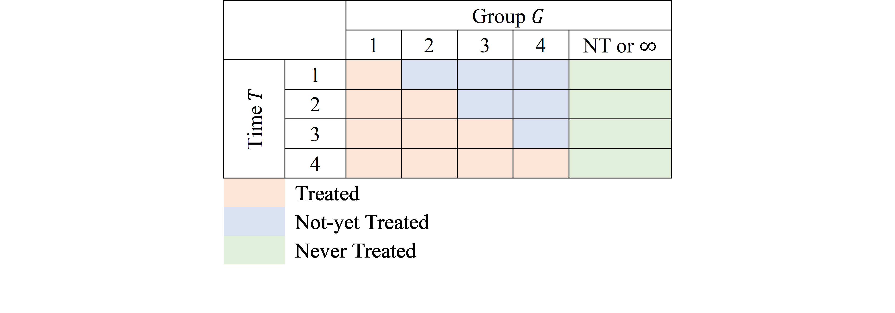
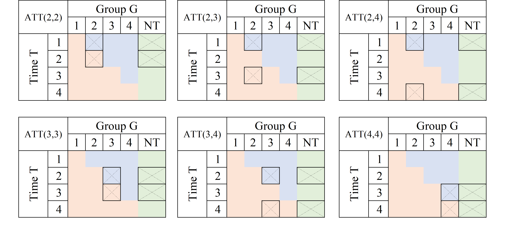
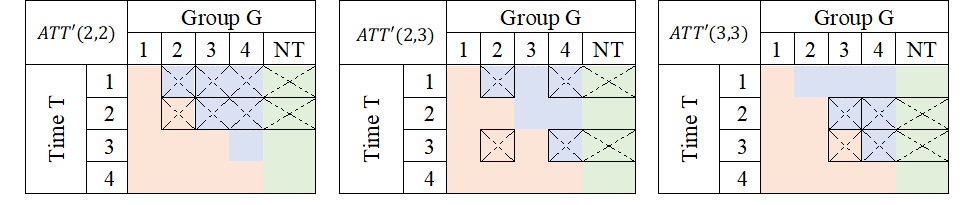
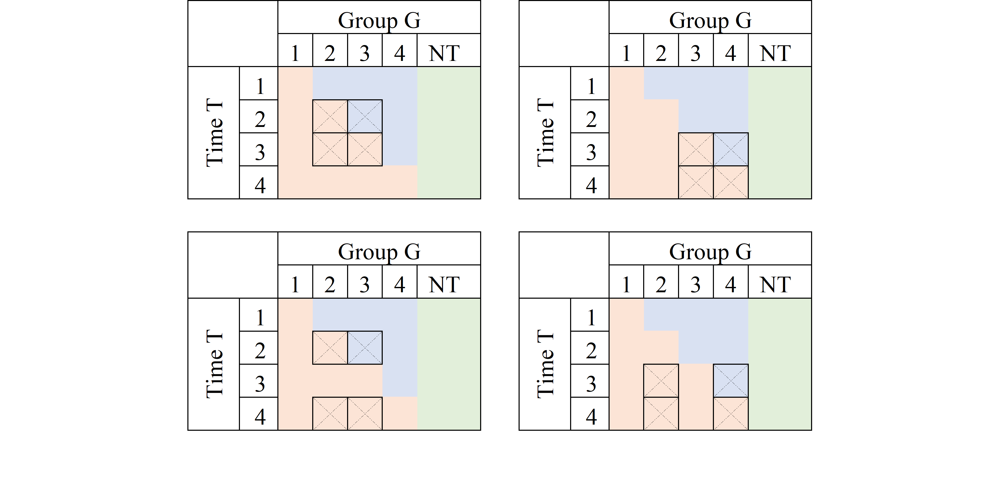
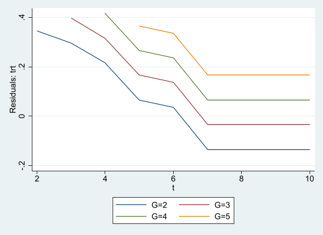

Code
clear
set seed 101
set obs 100
gen id = _n
gen gv = runiformint(2,10)
replace gv = 0 if gv>=8
expand 10
bysort id:gen t=_n
gen trt = gv<=t & gv!=0
ssc install hdfe
hdfe trt, abs(t id) gen(trt_d)
gen y = 0
replace y = 1 if trt==1 & trt_d <0 What went wrong with DID
Differences-in-Differences has been a popular approach for identifying causal effects of treatments, utilizing data from both treated and untreated units across time. However, in recent years (5? as of 2023), this methodology has come under scrutiny due to several flaws that have been identified, leading to what some refer to as the DID-Revolution. Numerous econometricians, both established and new, have worked on this topic, highlighting the problems associated with the methodology and proposing potential solutions. Additionally, they have suggested extensions to the model to address a wide range of scenarios (The literature has grown…alot).
As someone who was initially perplexed by these changes, problems, and solutions, I started reading in detail on the topic, and had the opportunity to develop two Stata commands:
csdid and csdid2, which implement Callaway and Sant’Anna (2021) approachjwdid, which implements the approach suggested by Wooldridge (2021).Through this process of coding and reading, I gained a better understanding of several concepts, particularly why certain strategies, such as the Two-way-Fixed-effect (TWFE), may not yield accurate estimates.
To simplify things and improve intuition, I will discuss the methodology and its problems and solutions.
Let’s start with the fundamental building block of the Differences-in-Differences methodology, which is the 2x2 canonical design that is widely used in many papers related to DID models.
The basic 2x2 DiD design involves observing two groups of observations across two periods in time. During the first period, neither of these groups receive a treatment, and thus, it can be assumed that they have similar experiences up to that point.
In the second period, one of the groups receives a treatment, such as a training program, medicine, or other types of treatments, while the other remains untreated. By comparing the changes in outcomes between the treated and untreated groups over time, we can estimate the causal effect of the treatment.
To analyze the data, a simple 2x2 matrix can be designed after the experiment is finalized, which helps to quantify the impact of the treatment.
| Time | TR=0 | TR=1 |
|---|---|---|
| T=0 | \(Y(0,0)\) | \(Y(1,0)\) |
| T=1 | \(Y(0,1)\) | \(Y(1,1)\) |
To simplify notation, I’ll assume that all the \(Y(TR,T)\) represent the average outcome for the group -TR- (treated or untreated) at time T (Pre=0 and Post =1).
We can begin by noting that the treatment occurred in T=1. One naive estimator that we could use to estimate the treatment effect (TE) would be to simply obtain the difference in outcome between the treated and untreated groups, which is expressed as “\(Y(1,1)-Y(0,1)\)” (First D).
However, this approach is incorrect because it fails to account for the self-selection bias that may exist between the two groups. For instance, the individuals who received the treatment may have been those who would benefit from it the most or needed it the most, which could lead to differences in their average outcomes.
Another naive approach would be to only examine the treated unit and evaluate how much its outcome has changed after the treatment, which is expressed as “\(Y(1,1)-Y(1,0)\)” (the other D). This approach would also be incorrect because the observed change could be due to some natural growth or trend that the unit experienced independent of the treatment.
To properly estimate the treatment effect (TE) , we need to combine both strategies and obtain the Differences in Differences (DiD). This approach helps to identify the causal effect of the treatment by comparing the changes in outcomes between the treated and untreated groups over time.
Intuitively, this could be thought in two ways:
TT1= (y11-y01) Post-period Treated vs untreated
-(y10-y00) pre -period Treated vs untreatedIn essence this captures the TE if the selection bias of the second period is the same as the selection bias observed in the first period.
TT2= (y11-y10) Treated Post vs pre
-(y01-y00) Untreated Post vs preIn this case, the TE is estimated if both groups would have experienced the same trends in their outcomes across time.
Both strategies estimate the same treatment effect, but they rely on different assumptions.
-The second strategy relies on the “parallel-trends” assumption, which assumes that the treated outcome would have experienced a similar and parallel change in outcome as the untreated units experience.
This is the vanilla 2x2, piece-of-cake strategy. If the basic assumptions hold, you cannot go wrong with this. The problem, surprisingly or not, is what happens when you have more data.
As I mentioned earlier, the simple case of DiD is straightforward to estimate and get right. We can even use a simple linear regression analysis to calculate the treatment effect (TE) using the formula:
\[ y_{it} = a_0 + a_1*tr + a_2*t + \delta * (tr*t) +e_{it} \]
However, the challenge arises when the design has multiple time periods and groups, and the treatment occurs at different times. This is known as treatment timing heterogeneity. In the following discussion, I will refer to insights from Callaway and Sant’Anna (2021) and Goodman-Bacon (2021) to explain the concepts.
Assume that there are four time periods T=1, 2, 3, and 4, and five “groups” G=Never Treated (NT), 1, 2, 3 and 4.
In the 2x2 design, the treatment identifier “TR” distinguishes treated (1) from untreated (0) units. However, in a design with more time periods, the possibility arises that units can be treated at different points in time or never treated at all.
Callaway and Sant’Anna (2021) use the letter “G” to identify this variable and represent observations that are never treated as “infinity \(\infty\)”. This is done because those units are never treated in the window of time we have access to.1
For simplicity, I will use “NT” to represent never treated units. It is worth noting that groups that are always treated cannot be identified in this design.
The TxG design can be represented in matrix form as follows:

In this TxG design, orange cells represent units that have effectivly received treatment, while the blue cells represent potential control units that have not-yet received treatment. The green cells correspond to never treated units that can be used as perfect controls, assuming there are no spill-over effects.
This design can be thought of as a combination of multiple 2x2 designs, but not all possible combinations are good ones for estimating the treatment effect. This is, infact, where the traditional TWFE model get things wrong.
A good reference that explains the problem is Goodman-Bacon (2021). The intuition behind the paper is that he traditional TWFE model obtains a parameter for TE that is the average of all possible 2x2 designs that could be constructed from the above matrix. However, not all of them are good ones!.
Some of the 2x2 combinations will provide interesting and meaningful results:
You can use some of them to calculate Treatment effects.
Some can be used for testing assumptions regarding parallel trends.
Some, however, will be combinations that are not useful, and may lead you to incorrect conclusions.
To account for the many periods (T) and treatment-cohorts (G) in the data structure, an extension to the simple linear model was proposed. This involved estimating a linear model that includes controls (fixed effects/dummies) for all available periods in the data, as well as for all panel individuals (or treatment-cohort groups). To capture the treatment effect, researchers would include a dummy variable \(D\) that takes the value of 1 after a unit has been treated, and 0 if it was never or not yet treated. This specification can be written as: \[ y_{it} = a_i + a_t + \delta D_{it}+e_{it} \]
where \(a_i\) captures the individual fixed effect (or cohort), \(a_t\) captures the time fixed effect, and \(\delta\) which was meant to capture an average treatment effect for treated units, across all time periods.
Goodman-Bacon (2021) discovered that the parameter of interest \(\delta\) is a weighted average of all feasible DiD designs that could be constructed from the data. This is because the Ordinary Least Squares method attempts to leverage all possible variation, without taking into account the nuances of which ones are actually useful for identifying causal effects, and which ones are not adequate to do so.
Lets say, we are interested in the treatment effect only for the group that was first treated in period 2 (G=2).
The first thing to consider is which groups could be used as a “control”, to appropriately identify the TE. The first and easy choice is to compare the G=1 units with observations that were never treated (NT), the “perfect” control group.
Using the NT as control units, we can construct at least 3 2x2 DiD setups to identify the TE, at periods 2, 3 and 4:

A very similar exercise could be done if one is interested in analyzing the TE for other groups (say G3 and G4):
If a Never treated group were not available, it is also possible, and valid given limited information, to use units from other “treated” groups as controls, as long as they have not yet been treated:

Average treatment effects could then be derived by “averaging” this individual treatment effects.
Just as there are good, there are also bad designs. As described in Goodman-Bacon (2021), one of the pitfalls of the TWFE is that it may also try to identify TE by comparing units that are already treated, but at different times.

Consider the first panel. It compares data for G3 to those in G2. At T=2, G3 is untreated, whereas G2 is treated both at T=2 and T=3. If the treatment effect were homogenous (a location shift), this may work. However, if the treatment affected both G2 and G3 differently, it would violate the parallel trend assumption, and this 2x2 design will not identify Treatment effects.
Now, why are these units used as controls?
From an OLS viewpoint, the reason is that the treatment status for a given unit remains constant across time, thereby making it appear as though the previously treated unit is a good control. Nonetheless, if the treatment effect varies over time, then the parallel trends assumption may be invalidated, and treatment effects will not be identified.
The problem describe above can be summarized with a single idea. WHen using OLS, sometimes one uses bad controls to estimete Treatment effects, which will affect the identification.
The other concept that has been used to describe the problem is one about Negative weights, which are closely related.
First the technical part.
Assume we have balanced panel data, and estimate the following model: \[ y_{it} = a_i + a_t + \delta D_{it}+e_{it} \]
One way to estimate this effects easily is to apply Frisch–Waugh–Lovell theorem, demean \(D_{it}\), and estimate \(\delta\) using the new data:
\[ \begin{aligned} \delta^{twfe} &=\frac{\sum \bar{\bar D}_{it} y_{it}}{\sum \bar{\bar D}_{it}^2} \\ \bar{\bar D}_{it} &= D_{it}+\bar D-(\bar D_i + \bar D_t) \end{aligned} \]
When estimating treatment effects, treated units are expected to receive a positive weight. However, after applying FWL, there is no assurance that \(\bar{\bar D}_{it}\) will be positive for already treated units. This happens because \(\bar D_t\) is larger in later periods, and \(\bar D_i\) is larger for units that were treated earlier. In consequence, units that were treated earlier could incorrectly receive a negative weight, when estimating the treatment effect, it could also be that units that were never treated are incorrectedly assigned a possitive weight, when they should receive negative weights.
How bad could it be? Consider the following excercise/code:
In this case, y is zero for everyone, but for selected treated units at some point in time. You would expect average treatment effects to be possitive. TWFE, would dissagree:
(MWFE estimator converged in 2 iterations)
HDFE Linear regression Number of obs = 1,000
Absorbing 2 HDFE groups F( 1, 890) = 44.48
Prob > F = 0.0000
R-squared = 0.5367
Adj R-squared = 0.4799
Within R-sq. = 0.0476
Root MSE = 0.2275
------------------------------------------------------------------------------ y | Coefficient Std. err. t P>|t| [95% conf. interval]-------------+---------------------------------------------------------------- trt | -.1770374 .0265457 -6.67 0.000 -.2291368 -.124938 _cons | .1962698 .0145409 13.50 0.000 .1677313 .2248083------------------------------------------------------------------------------
Absorbed degrees of freedom:-----------------------------------------------------+
Absorbed FE | Categories - Redundant = Num. Coefs |-------------+---------------------------------------|
id | 100 0 100 | t | 10 1 9 |
-----------------------------------------------------+But why is that? The way treatment was assigned, only the units that were treated earlier have a positive treatment, but those are the ones used as controls later on, receiving negative weights. Thus, TWFE uses that and estimates negative TE.

What I provided you here was a brief review of DID, with some of the intution on why TWFE fails. Now, it doesn’t mean there is no solutions moving forward. In fact, by the time you are reading it, you will probaly be aware of many of them.
Over the last years, there have been many propositions trying provide solutions that would tackle the problems related to TWFE DID. I have been lucky enough to participate in the after programming of couple of them, but also worked closely to understand some of the others: csdid/csdid2; jwdid; did2s; did_imputation; did_multiplegt.
These new strategies have one thing in commong. They aim to solve the problems of TWFE by either using good 2x2 designs, avoiding wrong 2x2 designs, or adjusting weights to reduce the impact of negative weights.
I dive a bit into the possible solutions (and may reiterated the problems) in other posts. For now, hope you enjoy this.
Comments and questions welcome.
This suggests they will be treated at some point in the far future↩︎
---
title: "DID: The Fall"
subtitle: "What went wrong with DID"
bibliography: references.bib
---
## Introduction
Differences-in-Differences has been a popular approach for identifying causal effects of treatments, utilizing data from both treated and untreated units across time. However, in recent years (5? as of 2023), this methodology has come under scrutiny due to several flaws that have been identified, leading to what some refer to as the DID-Revolution. Numerous econometricians, both established and new, have worked on this topic, highlighting the problems associated with the methodology and proposing potential solutions. Additionally, they have suggested extensions to the model to address a wide range of scenarios (The literature has grown...alot).
As someone who was initially perplexed by these changes, problems, and solutions, I started reading in detail on the topic, and had the opportunity to develop two Stata commands:
- `csdid` and `csdid2`, which implement @callaway_santanna_2021 approach
- `jwdid`, which implements the approach suggested by @wooldridge_twoway_2021.
Through this process of coding and reading, I gained a better understanding of several concepts, particularly why certain strategies, such as the Two-way-Fixed-effect (TWFE), may not yield accurate estimates.
To simplify things and improve intuition, I will discuss the methodology and its problems and solutions.
## DiD 2x2 Canonical Design
Let's start with the fundamental building block of the Differences-in-Differences methodology, which is the 2x2 canonical design that is widely used in many papers related to DID models.
The basic 2x2 DiD design involves observing two groups of observations across two periods in time. During the first period, neither of these groups receive a treatment, and thus, it can be assumed that they have similar experiences up to that point.
In the second period, one of the groups receives a treatment, such as a training program, medicine, or other types of treatments, while the other remains untreated. By comparing the changes in outcomes between the treated and untreated groups over time, we can estimate the causal effect of the treatment.
To analyze the data, a simple 2x2 matrix can be designed after the experiment is finalized, which helps to quantify the impact of the treatment.
| Time \Treatment | TR=0 | TR=1 |
|-----------------|--------|------ |
| T=0 | $Y(0,0)$ | $Y(1,0)$|
| T=1 | $Y(0,1)$ | $Y(1,1)$|
To simplify notation, I’ll assume that all the $Y(TR,T)$ represent the average outcome for the group -TR- (treated or untreated) at time T (Pre=0 and Post =1).
### How are treatetment effects estimated?
We can begin by noting that the treatment occurred in T=1. One naive estimator that we could use to estimate the treatment effect (TE) would be to simply obtain the difference in outcome between the treated and untreated groups, which is expressed as “$Y(1,1)-Y(0,1)$” (First D).
However, this approach is incorrect because it fails to account for the *self-selection bias* that may exist between the two groups. For instance, the individuals who received the treatment may have been those who would benefit from it the most or needed it the most, which could lead to differences in their average outcomes.
Another naive approach would be to only examine the treated unit and evaluate how much its outcome has changed after the treatment, which is expressed as “$Y(1,1)-Y(1,0)$” (the other D). This approach would also be incorrect because the observed change could be due to some natural growth or trend that the unit experienced independent of the treatment.
To properly estimate the treatment effect (TE) , we need to combine both strategies and obtain the Differences in Differences (DiD). This approach helps to identify the causal effect of the treatment by comparing the changes in outcomes between the treated and untreated groups over time.
Intuitively, this could be thought in two ways:
1. Estimate the TE by comparing the treated-untreated outcomes change in the post period to the pre-period outcome difference.
```
TT1= (y11-y01) Post-period Treated vs untreated
-(y10-y00) pre -period Treated vs untreated
```
In essence this captures the TE if the selection bias of the second period is the same as the selection bias observed in the first period.
2. Estimate the TE by comparing the outcome change for the treated group across time to the outcome change experienced by the not-treated group.
```
TT2= (y11-y10) Treated Post vs pre
-(y01-y00) Untreated Post vs pre
```
In this case, the TE is estimated if both groups would have experienced the same trends in their outcomes across time.
Both strategies estimate the same treatment effect, but they rely on different assumptions.
- The first strategy assumes "bias-stability," which implies that any factors that explain the difference between treated and untreated outcomes after the treatment are also present before the treatment and can be eliminated.
-The second strategy relies on the "parallel-trends" assumption, which assumes that the treated outcome would have experienced a similar and parallel change in outcome as the untreated units experience.
This is the vanilla 2x2, piece-of-cake strategy. If the basic assumptions hold, you cannot go wrong with this. The problem, surprisingly or not, is what happens when you have **more** data.
## Multiple Periods DID TxG Design:
### Where things went wrong
As I mentioned earlier, the simple case of DiD is straightforward to estimate and get right. We can even use a simple linear regression analysis to calculate the treatment effect (TE) using the formula:
$$
y_{it} = a_0 + a_1*tr + a_2*t + \delta * (tr*t) +e_{it}
$$
However, the challenge arises when the design has multiple time periods and groups, and the treatment occurs at different times. This is known as treatment timing heterogeneity. In the following discussion, I will refer to insights from @callaway_santanna_2021 and @goodman_bacon_2021 to explain the concepts.
### Setup
Assume that there are four time periods T=1, 2, 3, and 4, and five "groups" G=Never Treated (NT), 1, 2, 3 and 4.
In the 2x2 design, the treatment identifier "TR" distinguishes treated (1) from untreated (0) units. However, in a design with more time periods, the possibility arises that units can be treated at different points in time or never treated at all.
@callaway_santanna_2021 use the letter "G" to identify this variable and represent observations that are never treated as "infinity $\infty$". This is done because those units are never treated in the window of time we have access to.^[This suggests they will be treated at some point in the far future]
For simplicity, I will use "NT" to represent never treated units. It is worth noting that groups that are always treated cannot be identified in this design.
The TxG design can be represented in matrix form as follows:

In this TxG design, orange cells represent units that have effectivly received treatment, while the blue cells represent potential control units that have not-yet received treatment. The green cells correspond to never treated units that can be used as perfect controls, assuming there are no spill-over effects.
This design can be thought of as a combination of multiple 2x2 designs, but not all possible combinations are good ones for estimating the treatment effect. This is, infact, where the traditional TWFE model get things wrong.
A good reference that explains the problem is @goodman_bacon_2021. The intuition behind the paper is that he traditional TWFE model obtains a parameter for TE that is the average of all possible 2x2 designs that could be constructed from the above matrix. However, not all of them are good ones!.
Some of the 2x2 combinations will provide interesting and meaningful results:
- You can use some of them to calculate Treatment effects.
- Some can be used for testing assumptions regarding parallel trends.
- Some, however, will be combinations that are not useful, and may lead you to incorrect conclusions.
### What is the TWFE?
To account for the many periods (T) and treatment-cohorts (G) in the data structure, an extension to the simple linear model was proposed. This involved estimating a linear model that includes controls (fixed effects/dummies) for all available periods in the data, as well as for all panel individuals (or treatment-cohort groups). To capture the treatment effect, researchers would include a dummy variable $D$ that takes the value of 1 after a unit has been treated, and 0 if it was never or not yet treated. This specification can be written as:
$$
y_{it} = a_i + a_t + \delta D_{it}+e_{it}
$$
where $a_i$ captures the individual fixed effect (or cohort), $a_t$ captures the time fixed effect, and $\delta$ which was meant to capture an average treatment effect for treated units, across all time periods.
@goodman_bacon_2021 discovered that the parameter of interest $\delta$ is a weighted average of all feasible DiD designs that could be constructed from the data. This is because the Ordinary Least Squares method attempts to leverage all possible variation, without taking into account the nuances of which ones are actually useful for identifying causal effects, and which ones are not adequate to do so.
### First the Good
Lets say, we are interested in the treatment effect only for the group that was first treated in period 2 (G=2).
The first thing to consider is which groups could be used as a “control”, to appropriately identify the TE. The first and easy choice is to compare the G=1 units with observations that were never treated (NT), the “perfect” control group.
Using the NT as control units, we can construct at least 3 2x2 DiD setups to identify the TE, at periods 2, 3 and 4:

A very similar exercise could be done if one is interested in analyzing the TE for other groups (say G3 and G4):
If a Never treated group were not available, it is also possible, and valid given limited information, to use units from other “treated” groups as controls, as long as they have not yet been treated:

Average treatment effects could then be derived by "averaging" this individual treatment effects.
### Second the Bad
Just as there are good, there are also bad designs. As described in @goodman_bacon_2021, one of the pitfalls of the TWFE is that it may also try to identify TE by comparing units that are already treated, but at different times.

Consider the first panel. It compares data for G3 to those in G2. At T=2, G3 is untreated, whereas G2 is treated both at T=2 and T=3. If the treatment effect were homogenous (a location shift), this may work. However, if the treatment affected both G2 and G3 differently, it would violate the parallel trend assumption, and this 2x2 design will not identify Treatment effects.
Now, why are these units used as controls?
From an OLS viewpoint, the reason is that the treatment status for a given unit remains constant across time, thereby making it appear as though the previously treated unit is a good control. Nonetheless, if the treatment effect varies over time, then the parallel trends assumption may be invalidated, and treatment effects will not be identified.
### Bad controls and Negative weights: How bad can it be?
The problem describe above can be summarized with a single idea. WHen using OLS, sometimes one uses **bad** controls to estimete Treatment effects, which will affect the identification.
The other concept that has been used to describe the problem is one about **Negative weights**, which are closely related.
First the technical part.
Assume we have balanced panel data, and estimate the following model:
$$
y_{it} = a_i + a_t + \delta D_{it}+e_{it}
$$
One way to estimate this effects *easily* is to apply Frisch–Waugh–Lovell theorem, ***demean*** $D_{it}$, and estimate $\delta$ using the new data:
$$
\begin{aligned}
\delta^{twfe} &=\frac{\sum \bar{\bar D}_{it} y_{it}}{\sum \bar{\bar D}_{it}^2} \\
\bar{\bar D}_{it} &= D_{it}+\bar D-(\bar D_i + \bar D_t)
\end{aligned}
$$
When estimating treatment effects, treated units are expected to receive a positive weight. However, after applying FWL, there is no assurance that $\bar{\bar D}_{it}$ will be positive for already treated units. This happens because $\bar D_t$ is larger in later periods, and $\bar D_i$ is larger for units that were treated earlier.
In consequence, units that were treated earlier could incorrectly receive a negative weight, when estimating the treatment effect, it could also be that units that were never treated are incorrectedly assigned a possitive weight, when they should receive negative weights.
How bad could it be? Consider the following excercise/code:
```{stata}
*| output: false
clear
set seed 101
set obs 100
gen id = _n
gen gv = runiformint(2,10)
replace gv = 0 if gv>=8
expand 10
bysort id:gen t=_n
gen trt = gv<=t & gv!=0
ssc install hdfe
hdfe trt, abs(t id) gen(trt_d)
gen y = 0
replace y = 1 if trt==1 & trt_d <0
```
In this case, y is zero for everyone, but for selected treated units at some point in time. You would expect average treatment effects to be possitive. TWFE, would dissagree:
```{stata}
qui:ssc install reghdfe
reghdfe y trt, abs(id t)
```
But why is that? The way treatment was assigned, only the units that were treated earlier have a positive treatment, but those are the ones used as controls later on, receiving negative weights. Thus, TWFE uses that and estimates negative TE.
```{stata}
*| echo: false
*| fig-cap: "FWL-Weights"
two (line trt_dtrt t if trt==1 & gv==2, sort) ///
(line trt_dtrt t if trt==1 & gv==3, sort) ///
(line trt_dtrt t if trt==1 & gv==4, sort) ///
(line trt_dtrt t if trt==1 & gv==5, sort), legend(order(1 "G=2" 2 "G=3" 3 "G=4" 4 "G=5"))
```
## This were the problems, but solutions?
What I provided you here was a brief review of DID, with some of the intution on why TWFE fails. Now, it doesn't mean there is no
solutions moving forward. In fact, by the time you are reading it, you will probaly be aware of many of them.
Over the last years, there have been many propositions trying provide solutions that would tackle the problems related to TWFE DID. I have been lucky enough to participate in the after programming of couple of them, but also worked closely to understand some of the others:
`csdid`/`csdid2`; `jwdid`; `did2s`; `did_imputation`; `did_multiplegt`.
These new strategies have one thing in commong. They aim to solve the problems of TWFE by either using good 2x2 designs, avoiding wrong 2x2 designs, or adjusting weights to reduce the impact of negative weights.
I dive a bit into the possible solutions (and may reiterated the problems) in other posts. For now, hope you enjoy this.
Comments and questions welcome.
## References
:::{#refs}
:::